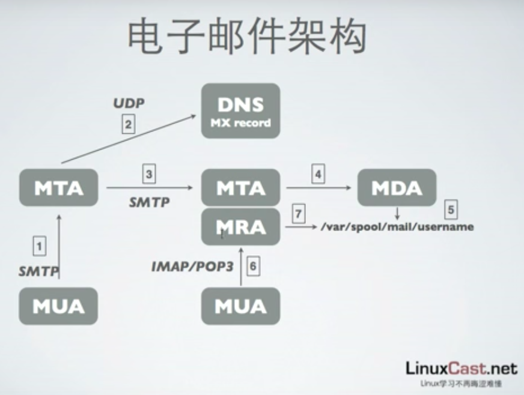

历史
- 1960 年代出现
- 1971 年通过网络发送第一份电子邮件
- 1987 年中国第一封电子邮件
vs 即时通讯
- 存档特性，可作为证据
- 商业环境内使用，可控
- 与其它环境的集成
- 干扰小
架构
原理图

概述
相对复杂，由很多部分组成，之间相互协作。外围有一些扩展，如安全性扩展。
核心分为四个组件：
- MUA：客户端
- MTA：发送代理
- MDA：寄送代理
- MRA：接收代理
协议分为收发两种：
- 发送
- SMTP
- 接收
- IMAP/POP3
另外涉及 DNS 相关知识（需要将邮件服务域名转换为主机名）
MUA
邮件客户端（user agent），主要用于收发邮件。
常见的客户端如 web 页面，mac mail, outlook, thunderbird, foxmail, mutt 等。
通过 IMAP/POP3 方式接收邮件，按用户进行标识，可选是否在服务器保存。其中：
- IMAP 协议允许客户端操作与服务器同步，效果更好
- POP3 只限在本地操作，但简单省资源
MTA
邮件传输代理，亦即通常所说的邮件服务器（核心）。
使用 SMTP 协议沟通 MUA 与 MTA，实现邮件的发送。实际上，可以看作 MTA 是对 SMTP 的一种实现。
常见的实现方案如 sendmail 和 postfix，后者配置更简单（人性化）。
MTA 只负责传输，由 MDA 来进行具体的数据存储
MDA
邮件寄送代理，负责邮件的存储管理。与 MTA 关系密切。
默认邮件被存储于 /var/spool/mail/<username> 目录，MDA 除了存储管理之外，还可以对邮件进行垃圾过滤及病毒扫描处理。
常用的实现有 procmail 和 maildrop，前者使用更多。
MRA
邮件接收代理，提供了 IMAP 或 POP3 协议服务。常用实现为 dovecot。
考虑到安全性，进行 SSL 加密。加密后的协议称为 IMAPS 和 POP3S
DNS
邮箱通过 <username>@(<hostname>|<domain-name>) 来标识。
发送和接收时需要查找 DNS 中 mx 记录（域名与主机对应关系）。
工具
通过 dig 命令查看 mx 信息：
dig -t mx qq.com
一个域名可能对应到多个主机地址